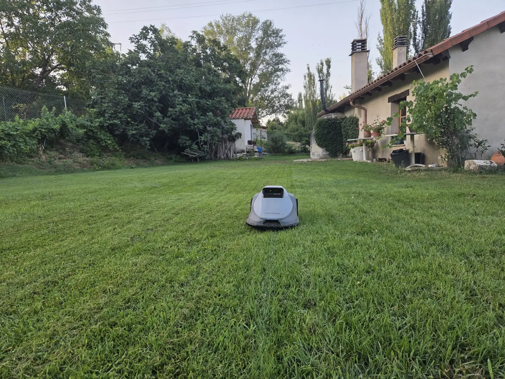
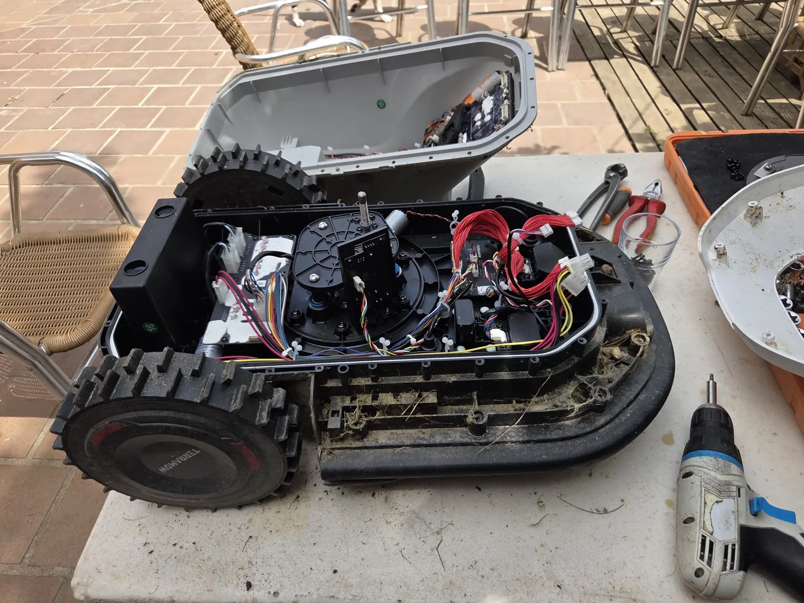
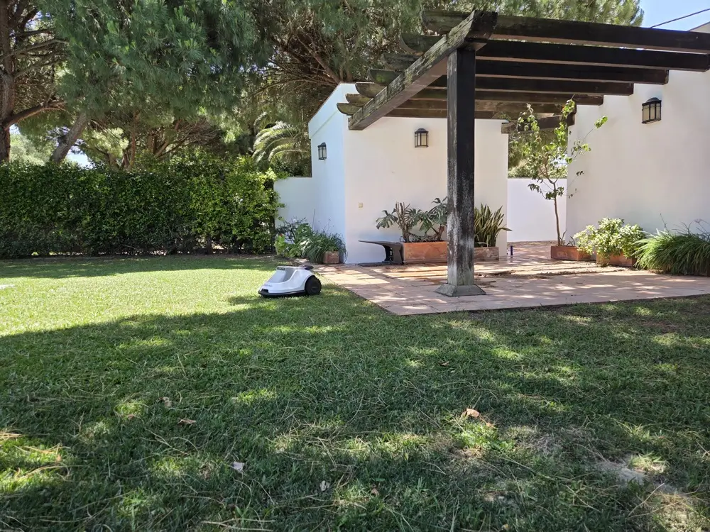
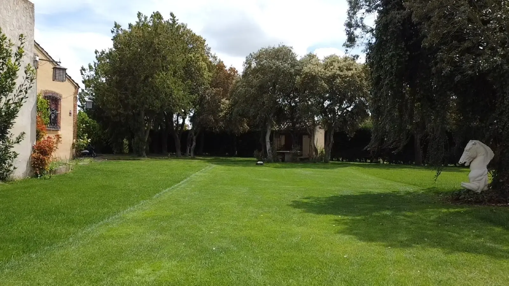
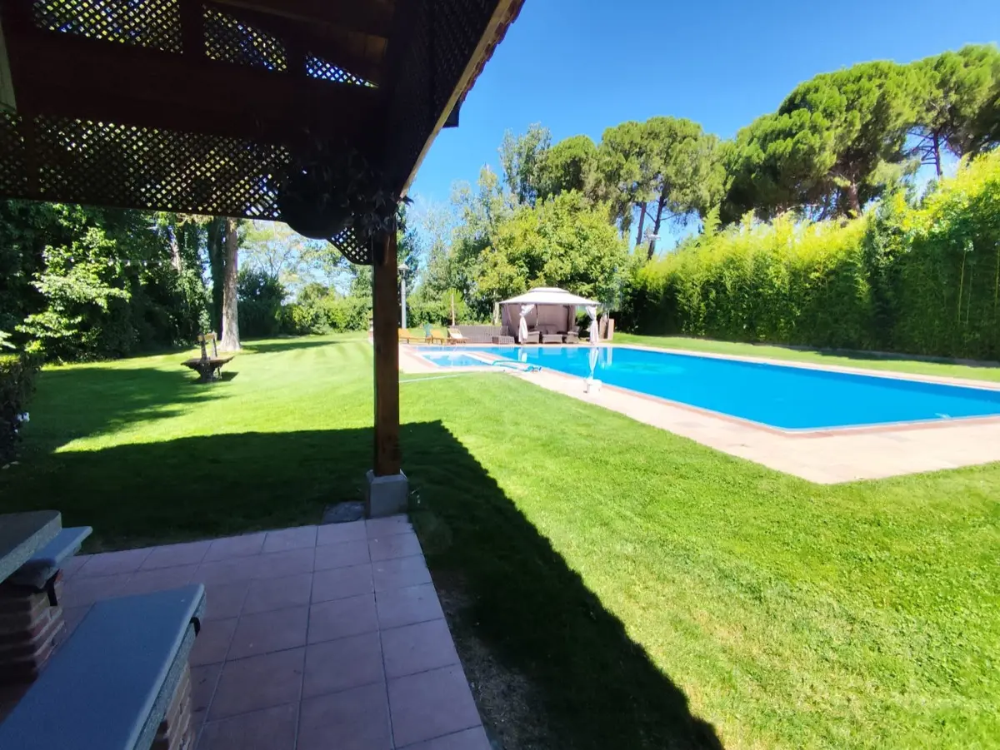
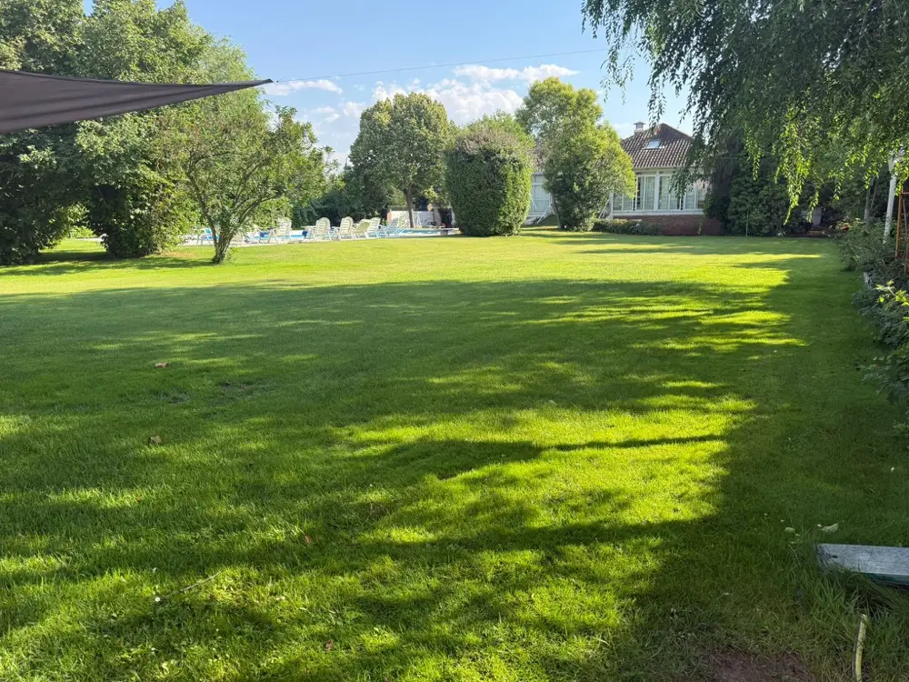
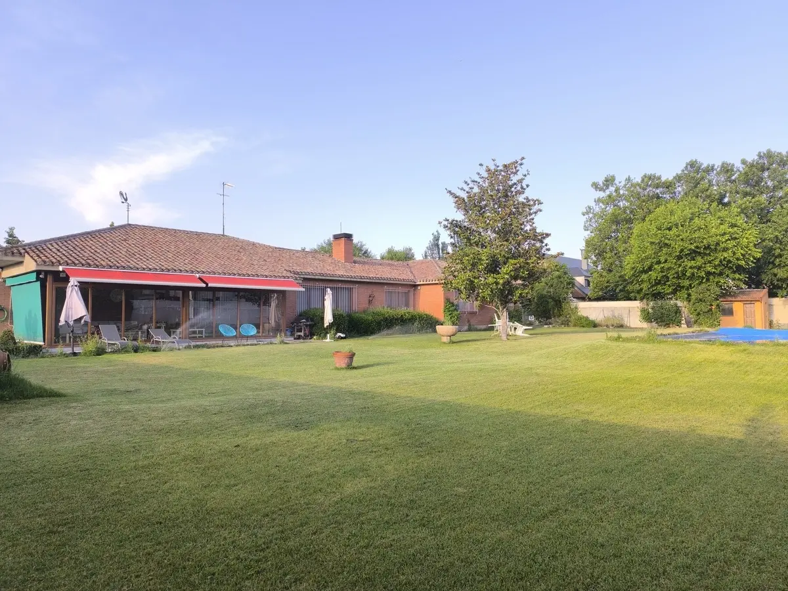

Corta solo, todos los días
Un cortador de césped automático que sale cada día, corta un poco y vuelve a su base. El césped está siempre a la misma altura, sin que tengas que acordarte.
Renting anual con instalación, mantenimiento y averías incluidos. Sin cable perimetral y también para jardines con pendiente.
* Jardines de hasta 600 m². Hasta 1.000 m², 760 €/año. Menos de 2 € al día.

Pagas una cuota al año y te olvidas del césped. El robot es nuestro, el jardín es tuyo: lo instalamos, lo mantenemos y, si se estropea, lo cambiamos. Lo llaman de muchas formas (cortacésped automático, robot segadora, segadora automática, cortacésped que va solo); nosotros lo llamamos la forma más fácil de tener el césped bien en Madrid.
Un cortador de césped automático que sale cada día, corta un poco y vuelve a su base. El césped está siempre a la misma altura, sin que tengas que acordarte.
No molesta a tus vecinos ni a tu siesta. Puede cortar por la mañana temprano o mientras no estás en casa.
Un robot cortacésped eléctrico, con batería y sin cable perimetral. Nada de bidones, nada de zanjas en el jardín.
Horarios, zonas y altura desde la app: un cortacésped inteligente que Pepo te deja configurado el día de la instalación.
Con el alquiler del robot cortacésped tienes todo lo que hace falta para que el césped se corte solo durante un año entero. No compras nada, no mantienes nada y no llamas a ningún servicio técnico: para eso estamos nosotros.
Cuchillas, limpieza, ajustes, lo que sea. Cualquier fallo que te dé el robot, te despreocupas: lo resolvemos nosotros y no te cuesta más.
Si un día no arranca, nos llamas. En menos de 7 días lo tienes arreglado o te instalamos otro. El césped no espera y nosotros tampoco.
Nadie en el sector da un plazo por escrito cuando algo se rompe. Nosotros sí. Cuchillas, limpieza, ajustes, piezas de desgaste y cualquier avería entran en la cuota. Si no tiene arreglo rápido, en menos de 7 días tienes otro robot cortando. Pepo lo abre, lo mira y lo soluciona.

La reparación la hace Pepo. Cuchillas, limpieza de la base, cambio de piezas de desgaste y las averías que puedan surgir van dentro del alquiler del robot cortacésped: ni factura aparte, ni servicio técnico lejos, ni semanas sin césped cortado.
Un solo pago al año según el tamaño de tu césped. Sin cuotas escondidas, sin mantenimiento aparte, sin sorpresas cuando algo se rompe. Es lo que cuesta un café al día por no volver a cortar el césped.
Menos de 2 € al día · pago anual*
Poco más de 2 € al día · pago anual*
*Precio anual, IVA incluido [CONFIRMAR PEPO]. Jardines de más de 1.000 m²: consúltanos.
¿Comprarlo por tu cuenta? Una máquina cortacésped automática decente cuesta entre 950 y 6.000 €, más la instalación y el mantenimiento anual aparte. → Ver precios al detalle
Los robots que instalamos no necesitan cable enterrado alrededor del jardín. No hay zanja, no hay cable que se corte con la azada y no hay que levantar nada. Pepo marca las zonas por las que puede pasar el robot y las que no (piscina, parterres, el arenero de los niños) y lo deja cortando el mismo día. Un cortacésped autónomo de verdad: sin cable y sin obra.
¿Tu jardín tiene cuesta, escalones de césped o dos zonas separadas? No es un problema. Lo vemos en la demostración y te lo decimos claro.
Desde el adosado con 200 m² de césped hasta el chalet con 1.000. Si tienes más, cuéntanoslo y buscamos la forma.

Desde que nos llamas hasta que el robot está cortando pasan pocos días y cero complicaciones. Pepo se desplaza a cualquier punto de la Comunidad de Madrid: la instalación de un robot cortacésped en Madrid la hacemos nosotros, no un transportista.
Nos cuentas cuántos metros de césped tienes y cómo es el jardín. Con eso ya sabemos qué robot necesitas y qué cuota te corresponde.
Vamos a tu casa, estudiamos el terreno y te dejamos un robot cortando de prueba. 175 €* que se descuentan íntegros de tu cuota si sigues adelante.
Instalamos la base, marcamos las zonas, ajustamos la altura y te configuramos la app en el móvil. Todo en una visita [CONFIRMAR PEPO duración].
A partir de ahí, el robot de césped corta solo todos los días. Tú pagas la cuota anual por transferencia y no vuelves a pensar en ello.
Desde el primer contacto hasta tener el robot cortando: [CONFIRMAR PEPO] días. *Cifra exacta de la demo y mecánica del descuento: [CONFIRMAR PEPO].
Soy Pepo. Instalo yo los robots, atiendo yo el teléfono y, si algo falla, voy yo a arreglarlo. No hay centralita ni número de incidencia: hay un móvil que suena y una persona que lo coge. Llevo años poniendo robots cortacésped en jardines de Madrid y sé lo que pasa cuando uno se para en julio: por eso te garantizo otro en menos de 7 días. Mi trabajo es que no tengas que pensar en el césped.
El renting también funciona cuando el césped es parte de tu negocio. Ya cortamos el césped de fincas de bodas y campos de fútbol: corte diario, silencioso y con un coste anual cerrado que puedes presupuestar.

Césped de foto cada fin de semana, sin ruido durante la ceremonia y sin depender de la agenda del jardinero.
Ver fincas →
Altura uniforme, corte programado entre entrenamientos y un único coste al año para la junta.
Ver campos →
Zonas verdes de polígono, hotel o urbanización con una sola línea de presupuesto y un solo interlocutor.
Ver profesionales →Trabajamos en toda la Comunidad de Madrid, sobre todo en la periferia, donde están los chalets con jardín: norte, oeste, sur y sierra. Si buscas alquiler de cortacésped en Madrid que vaya solo y no tengas que tocar, te lo llevamos a casa.
Lista orientativa [CONFIRMAR PEPO].
También instalamos robots cortacésped en Valladolid, Segovia, Toledo y Cádiz.
Lo que dicen quienes ya tienen un robot de jardín de IRM cortando en su casa. Nombres y jardines reales [CONFIRMAR PEPO testimonios con permiso].



No. Es renting anual: pagas una cuota al año y el robot cortacésped, la instalación, el mantenimiento y las averías van incluidos. El robot sigue siendo de IRM Servicios, así que si se estropea o se queda viejo, es problema nuestro, no tuyo. Es la diferencia entre comprarlo por tu cuenta y tenerlo en alquiler con todo incluido en Madrid.
Nos llamas y en menos de 7 días lo tienes arreglado o te instalamos otro robot. No hay que llevarlo a ningún sitio ni esperar a un servicio técnico: Pepo va a tu casa en Madrid, lo revisa y, si no tiene arreglo rápido, lo sustituye. El mantenimiento y las averías ya están pagados con la cuota.
El renting es anual y se paga en un solo pago por transferencia, normalmente una vez instalado el robot. Lo hacemos así para que la cuota sea lo más baja posible: 660 € al año* son menos de 2 € al día. Si lo prefieres ver así, equivale a unos 55 € al mes, pero el pago es anual. Para más de 600 m², la cuota es de 760 €/año.
No, el servicio es anual. El césped en Madrid crece de marzo a noviembre y en invierno el robot descansa en su base, pero el mantenimiento, la app y la garantía de sustitución siguen activos todo el año. Un cortacésped automático que solo trabaja tres meses no te quitaría el problema; uno que lo tiene todo el año, sí.
En la mayoría de los casos, sí. Los robots que instalamos no necesitan cable perimetral, suben pendientes [CONFIRMAR PEPO máximo] y pueden trabajar en zonas separadas, como el jardín delantero y el trasero. Lo comprobamos en la demostración: vamos a tu casa, lo vemos sobre el terreno y te decimos si tu césped es apto antes de que pagues nada de la cuota anual.
[CONFIRMAR PEPO renovación, retirada, cambio de robot]. Lo que sí te adelantamos: no hay permanencia más allá del año contratado y no te quedas con una máquina en el garaje. Si renuevas, seguimos igual; si no, retiramos el robot y la base y tu jardín queda como estaba.